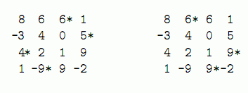

你难以想象贝茜看到一只妖精在牧场出现时是多么的惊讶．她不是傻瓜，立即猛扑过去，用她那灵活的牛蹄抓住了那只妖精．
“你可以许一个愿望，傻大个儿！”妖精说．
“财富，”贝茜用梦游般的声音回答道， “我要获得财富的机会．”
妖精从来没有碰到过这么简单的愿望．他在地方划出一大块N×N(1≤N≤200)的方格，每个格子上写上_1,000,000到1,000,000之间的数字．他说： “在方格上朝一个方向行走，可以是行的方向，列的方向，斜对角的方向，一步只能走一格，所有你踩过的数字的和就是你的财富．”
贝茜请你来帮忙，找到一行、一列或一条对角线上找一段连续的数字，它们的和最大．由于妖精方格的神奇特性，沿着一个方向走，走到了边际，再一步跨过去可以“绕”到方格的对边出现．一行两端的格子是相邻的，一列两端的格子也是相邻的，甚至相邻两行的分别两端的格子也是相邻的（斜对角方向）．
对于下图左边的方格，所有标记过的数字都在一条对角线上．

对于这个方格，能踩出来的最大的和是24，踩过的数字在右图中标记出来了